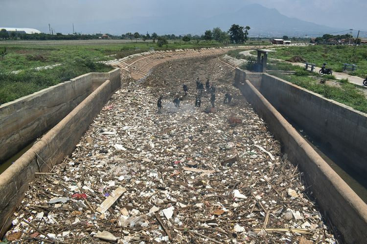

Sungai yang dulunya tercemar oleh banyak sampah dan limbah, kini mendapat perhatian serius dari Pandawara Group, sebuah kelompok pejuang lingkungan yang berkomitmen untuk menjaga kebersihan dan keindahan alam. Melihat kondisi sungai yang memprihatinkan, mereka mengambil inisiatif untuk membersihkan sungai tersebut secara menyeluruh. Dengan semangat yang tinggi, anggota Pandawara Group bekerja keras sepanjang hari, membersihkan sampah-sampah yang telah terakumulasi selama bertahun-tahun. Mereka menggunakan peralatan khusus dan bekerja secara terorganisir untuk memastikan bahwa setiap sudut sungai dibersihkan dengan baik. Tidak hanya membersihkan sampah, Pandawara Group juga melakukan edukasi kepada masyarakat sekitar tentang pentingnya menjaga kebersihan sungai. Mereka mengadakan kampanye lingkungan dan sosialisasi agar masyarakat lebih peduli dan terlibat aktif dalam menjaga kelestarian alam. Hasil dari kerja keras Pandawara Group sangat membanggakan. Sungai yang sebelumnya tercemar dan penuh dengan sampah kini tampak lebih bersih, alaminya kembali indah, dan lingkungan sekitar menjadi lebih sehat. Tindakan nyata mereka menjadi inspirasi bagi banyak orang untuk turut berperan dalam menjaga lingkungan dan melindungi alam
Sungai Cikeruh
Sungai Cikeruh tepatnya di Bendungan Bugel, Kecamatan Cileunyi, Kabupaten Bandung, Jawa Barat adalah salah satu sungai yang sudah dibersihkan oleh pandawara group. Para pemuda dari Pandawara Group, Masyarakat, pemda Kab. Bandung, kepolisian dan berbagai instansi lainnya melakukan pembersihan Sungai Cikeruh, Desa Cimekar, Kabupaten Bandung pada Rabu, 26 Juli 2023. Sebelumnya berkat ajakan yang ditulis di caption akun Instagram @pandawaragroup , unggahan tersebut mengajak warga Bandung untuk memperingati Hari Sungai Nasional dengan cara bersih-bersih sungai. Aksi bersih- bersih sungai diikuti berbagai masyarakat maupun instansi lainnya yang dilaksanakan di bendungan bugel atau sungai Cikeruh, Kabupaten Bandung pada hari Rabu, 26 Juli 2023.
Keseruan bersih-bersih sungai Cikeruh